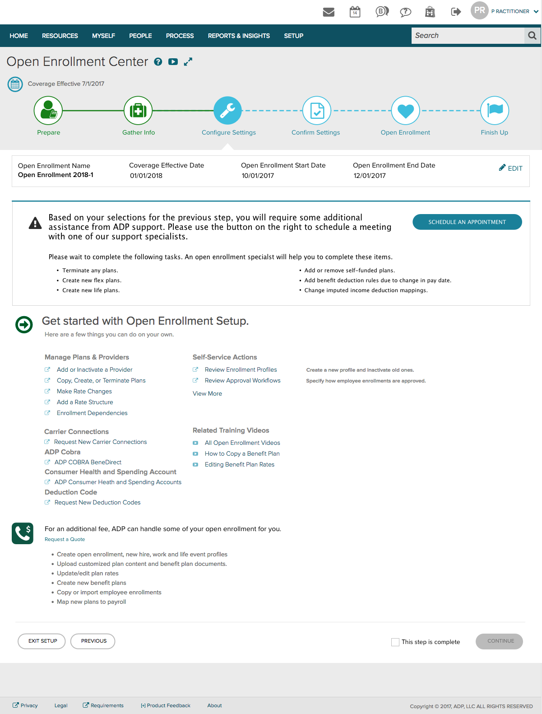

Let's say, Company A wants to start a new benefit plan for their employees because it covers dental health and costs less. HR need to digitalize the benefit plan, get it correctly connected to the payroll and get qualified employees enrolled within a certain time. The specific needs for setting up or changing benefit plan could vary but the scenario is similar. So how can we assist HR to complete the mission?
It was frustrated when I started my internship because I didn't have any background knowledge and the information is overwhelming. So how can I quickly get familiar with the domain?
Heuristics Evaluation helps!
I used Nielsen's heuristics to evaluate the usability. It helps me pay attention to details and asks "why", which led me understand our target user and high-level goals of the project.
Researcher of our team identified three important user needs of Open Enrollment Center and we needed to further narrow down the design scope since we only had one month to finish the project. We made final decision considered about feasibility and its impact on marketing.
After narrowing down the design scope it's also important to define specific design goals of each page. E.g. the goal of the following page is to lead users to contact ADP support. But we also want users exploring the bottom section (self set up section) which could make their communication with ADP support more efficient.
We held daily design reviews for this project. Every designer will present their design and gather feedback from peers.
I have had three internships and was familiar with agile development environment. I learned to deliver the design in a most efficient way considering three things:
At ADP, our deliverables are prototype + design annotation
In new design, we made a decision to let the system detect the progress of the open enrollment automatically which is rejected bt the dev team because of "not worth spending time to implement it".
However, I believe the value of the change. So I decided to conducted an online usability testing with our real clients to prove my understanding.
The testing interface is diplayed below. Participants need to read the task and complete the task. The task success were measured. Screen recording and think-aloud data were collected.
The result shows 8/11 participants had navigation problems and totally didn't understand how to solve it.
{kind=link}